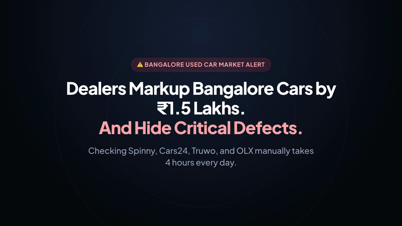

Autonomous multi-platform used vehicle radar tracking, scoring, and alert pipeline for the Bangalore pre-owned car market across Spinny, Cars24, Truwo, and OLX.
Watch the 18-second product overview showcasing the multi-platform radar sweep, factual price breakdown, fast filters, and instant mobile push alerts:

Rendered using Hyperframes with synchronized music and interface audio cues. Download high-definition MP4 (3.3 MB).
Bangalore Car Radar aggregates and evaluates pre-owned vehicle inventory across all major automotive platforms in Bangalore. It eliminates speculative dealership markups by computing fair-value ratings, providing factual 2-year resale and maintenance estimates, and monitoring live listings hourly.
The monitoring pipeline pulls verified inventory with mechanical inspection sheets and direct vehicle listing URLs:
| Platform | Identifier | Type | Inspection Guarantee |
|---|---|---|---|
| Spinny | Spinny | API & Hub Feeds | 200-Point Spinny Assured & Max certified inspection |
| Cars24 | Cars24 | Search Endpoints | 140-Point Cars24 Assured mechanical warranty |
| Truwo | Truwo | Hub Feed | Verified mechanical inspection, Bengaluru South/East hubs |
| OLX | OLX | Bangalore Feed | Direct seller & certified listings across Bangalore |
Every vehicle receives an objective 0 to 100 score evaluating depreciation, mechanical wear, and Bangalore market demand:
| Component | Weight | Calculation Basis |
|---|---|---|
| Price Discount vs New | Up to 18 Points | High discount percentage vs original new showroom price. |
| Odometer & Engine Wear | Up to 24 Points | Low odometer readings (< 40k km) indicate low mechanical wear. |
| Vehicle Age & Generation | Up to 20 Points | BS6 Phase 2 era (2020+) and modern safety chassis rewarded. |
| Warranty & Certification | Up to 14 Points | Certified multi-point inspection warranty or direct seller pricing. |
| Bangalore Market Demand | Up to 9 Points | Trusted high-liquidity brands (Maruti, Hyundai, Honda, Toyota). |
Original showroom price (orig_retail_price) and savings discount (retail_discount_pct) are derived through a 4-tier normalized evaluation pipeline:
| Tier | Mechanism | Formula & Behavior |
|---|---|---|
| 1. Model Baseline Matrix | 100+ vehicle lines matched by normalized longest-substring priority | Whitespace/hyphen stripped regex match prevents misclassification (e.g. Grand i10 before i10; BMW X5 before generic BMW). |
| 2. Brand-Level Fallback | Segment anchors for unlisted or sparse trims | Luxury brands anchored accurately (BMW ₹58L, Mercedes ₹65L, Audi ₹52L, Volvo ₹62L, Toyota ₹14.5L). |
| 3. Year & Trim Adjustments | Dynamic inflation and variant scaling | base * (1 + (year - 2016) * 0.035) * (+10% top-spec) * (+8% AT). |
| 4. Age Depreciation Floor | Logical floor gate against source payload anomalies | If asking price exceeds model base, enforces orig_retail = price * max(1.25, 1.0 + age * 0.07). Ignores marketplace pre-markdown listing strikes. |
The dashboard provides a responsive, dual-mode filter architecture designed for rapid refinement across desktop and mobile viewports:
On mobile screens, static vertical filter forms are eliminated to keep cars in the primary viewport:
⚙️ Filters [count] trigger button.🔥 Top Deals, ⚡ Auto, 🕹️ Manual, ≤ ₹5L, ⛽ Petrol, 🛢️ Diesel, 🛡️ German ≤5L, 🏎️ BMW, All Cars).⚙️ Filters smoothly opens an 86vh bottom-sheet drawer with backdrop blur, full slider controls, and a sticky View X Verified Cars → action button.All, 2016+, 2018+, 2020+, 2022+) and continuous year slider (2012 to 2024).Any, 20%+, 35%+, 50%+) with 0% to 60%+ range slider.Any, ≤ 40k, ≤ 60k, ≤ 80k, ≤ 100k) and 20k to 120k km slider.All (1,746), ⚡ Automatic (805), and 🕹️ Manual (941).All, ⛽ Petrol (1,249), 🛢️ Diesel (449), and 🍃 CNG (12).localStorage.Pre-owned car deals under ₹5L often receive reservations within 3 hours in Bangalore. The system provides two notification channels:
Zero signups, open-source notification pipeline via ntfy.sh/kiran-car-radar. High-priority push notifications include direct listing links and car photographs, dispatached instantly to Android and iOS devices.
curl -d "🔥 2018 Honda Jazz Petrol dropped to ₹4.20L at Spinny Whitefield!" \
-H "Title: Car Deal Radar Alert" \
-H "Click: https://kiranpuli.github.io/bangalore-car-radar/" \
https://ntfy.sh/kiran-car-radarConfigured with web application manifests (site.webmanifest, manifest.json), high-resolution vector SVG favicon, 192px/512px maskable icons, and #131209 dark status bar theme color.
The monitoring pipeline runs autonomously on two parallel schedules:
.github/workflows/deploy.yml schedules an hourly runner that executes scrapers, runs mechanical scoring, regenerates deals.html and index.html, and commits updates to main.hourly_update.sh runs via macOS launchd / cron with rebase resilience:
0 * * * * cd /Users/kiran/workplace/bangalore-car-radar && ./hourly_update.sh >> hourly_sync.log 2>&1Run these commands locally to test scrapers, rebuild static UI, or re-render launch media:
python3 build_ui.pypython3 spinny_checker.py --headlesscd brag-output/composition && npx hyperframes check && npx hyperframes render -o ../brag.mp4python3 -c "
import urllib.request
req = urllib.request.Request('https://ntfy.sh/kiran-car-radar', data=b'Test alert from Bangalore Car Radar', headers={'Title': 'Radar Test Alert'})
urllib.request.urlopen(req)
print('Alert dispatched successfully')
"